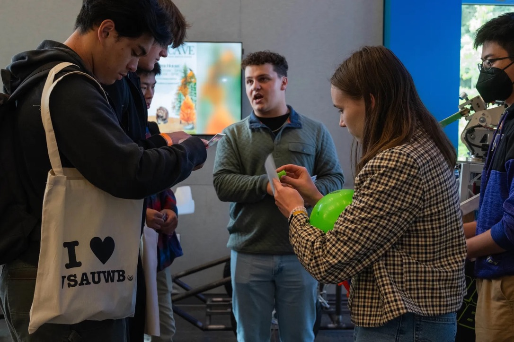
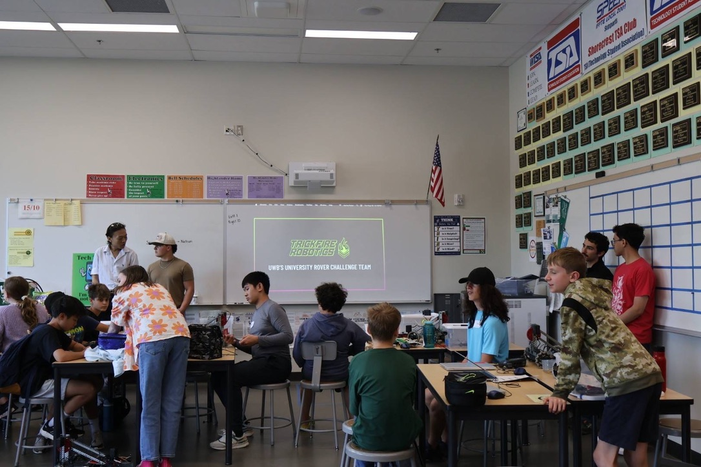
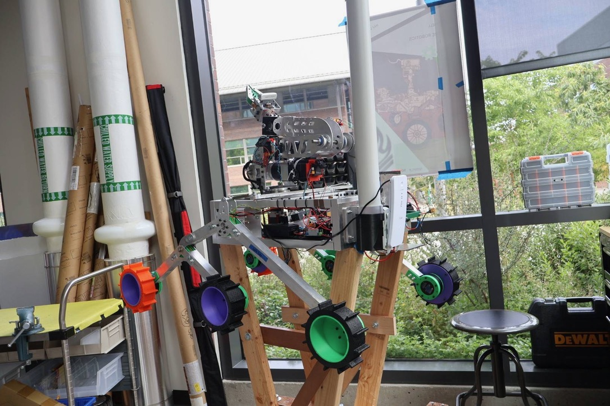
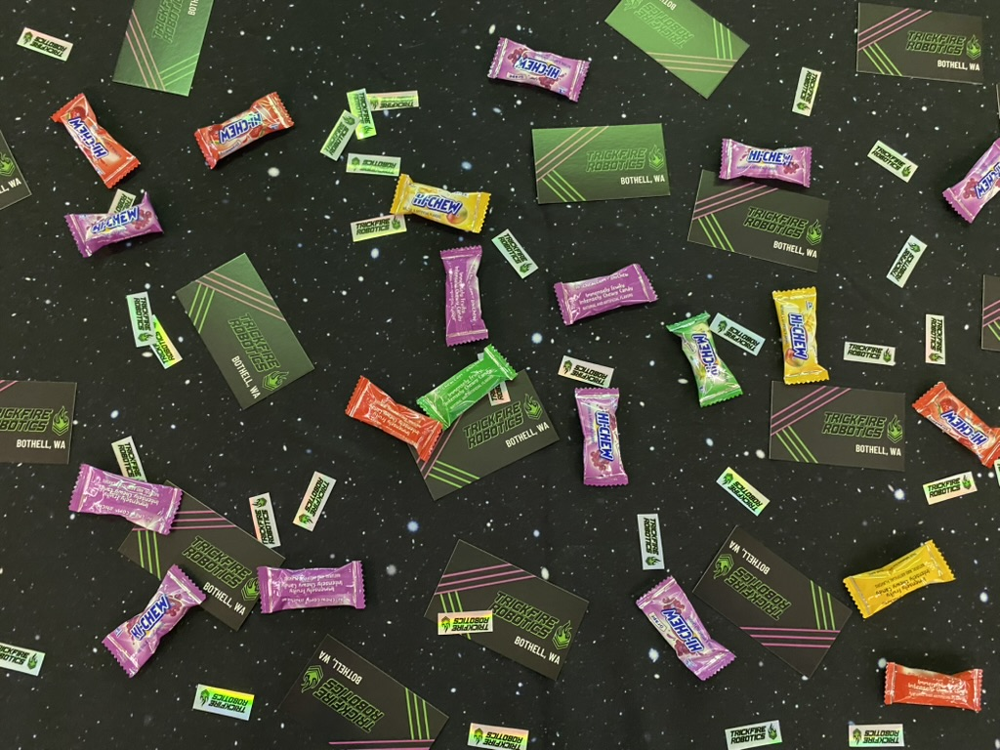
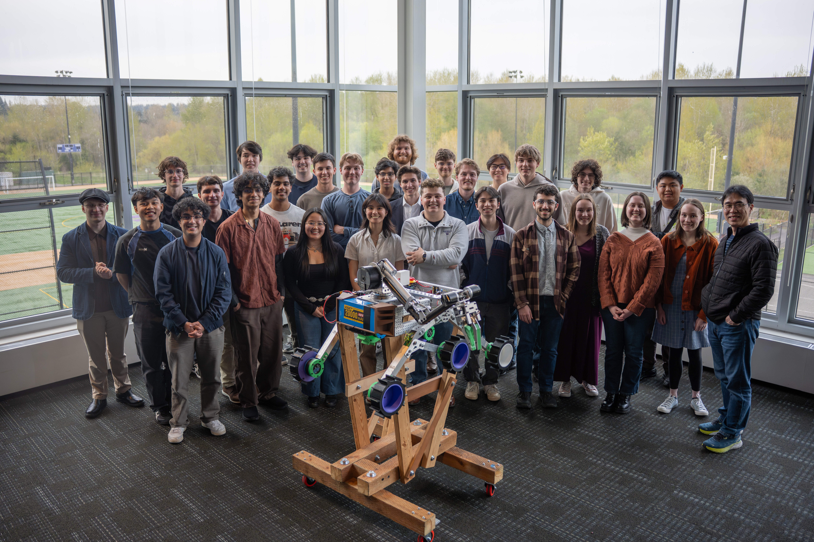

VEX Robotics
During high school I competed on team 99621A Lemon Pi, an all-girls VEX Robotics team! My roles on the team included programming, building, and designing the robot, along with documenting our work in an engineering notebook. While the VEX Robotics Competition taught me lots about what it takes to dream up, build, and maintain a competition robot, it also taught me about resilience and the beauty of failing spectacularly. In two years, my team went from placing very last at our first tournament to winning an award at the state championship! Since graduating, I have enjoyed sharing my love for robotics with my community by volunteering at a robotics summer camp and refereeing at local competitions.


Awards and Accomplishments
- Innovate Award | Cavelero Cup
- Design Award | Lake Stevens League
- Judges Award | Washington State Championship
- Co-Authored a 2,200+ Page Engineering Notebook
Watch Our 2023-2024 Season Recap Video!
TrickFire Robotics
After graduating high school, I couldn't imagine my life without robotics. During my first quarter of college I was quick to join my school's robotics team, which competes in the University Rover Challenge. The University Rover Challenge is an international competition challenging students to design and develop rovers relevant to future Mars exploration. Teams compete in four missions related to autonomous navigation, life detection, equipment servicing, and extreme delivery. I primarily have software responsibilities on my team and work on Mission Control, the operational hub responsible for communication between the rover and its operators. I've also embraced non-technical roles including connecting the team to outreach opportunities and rewriting the style guide to introduce an additional color (pink)!






